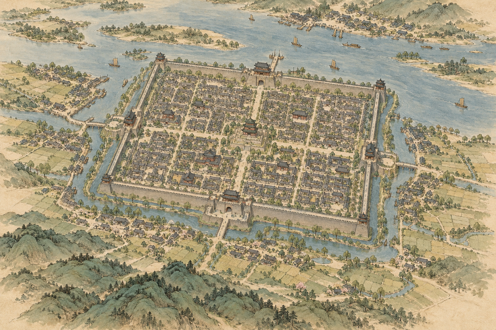
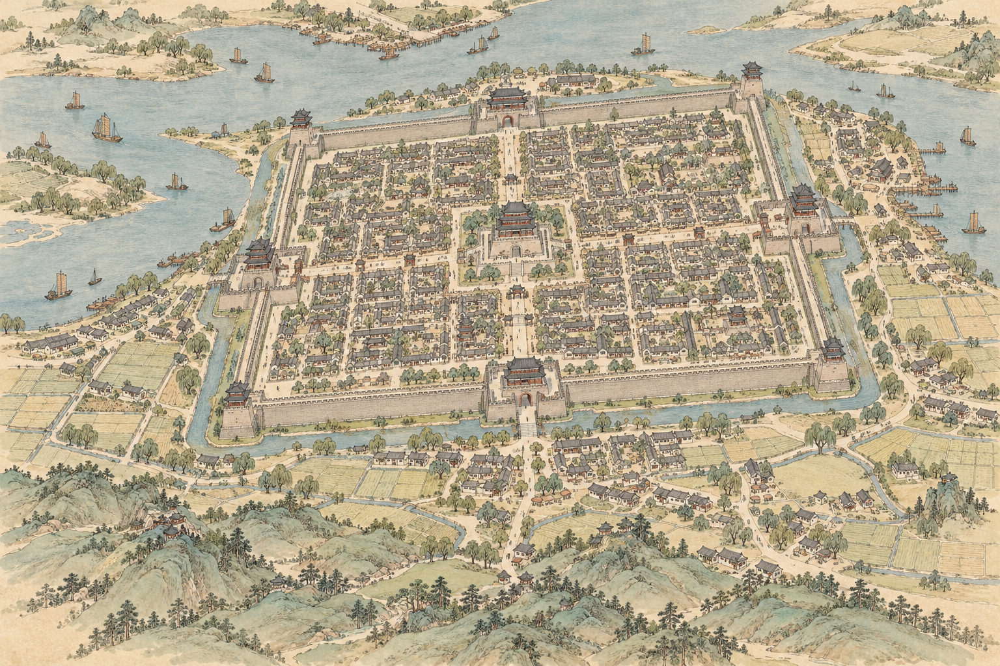
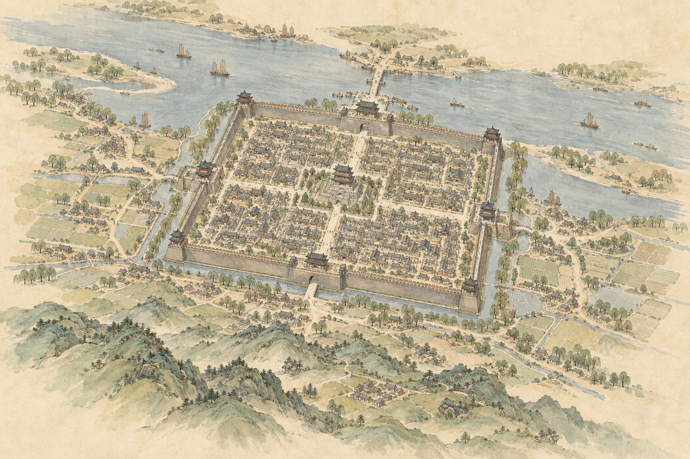
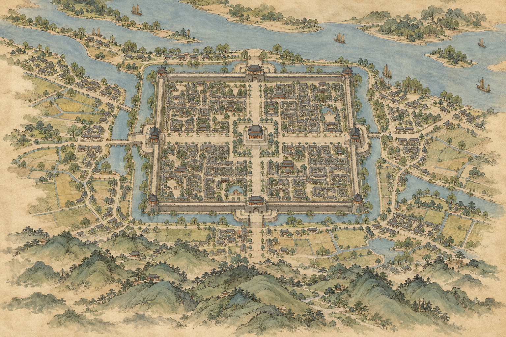

01

线稿与水彩均衡；建筑体量感偏强，画面较满；瓮城不清晰。
1536 × 1024 · 内置 image_gen · 用户已选 01 作为主风格 · 点击图片查看原图
建议比较：线稿与水彩比例、色板、建筑立体感。用户已选 01；保留其余候选供比较。当前均为风格探索，不代表地理或建筑复原验收通过。

线稿与水彩均衡；建筑体量感偏强，画面较满；瓮城不清晰。

细线稿较明显，但与 01 差异有限；瓮城不清晰。

纸色留白较多，水彩较轻；仍有明显透视缩短，瓮城不清晰。

更接近正俯视，方城轮廓更易读，门外可见围合结构；画面较密，适合作为地图方向候选。